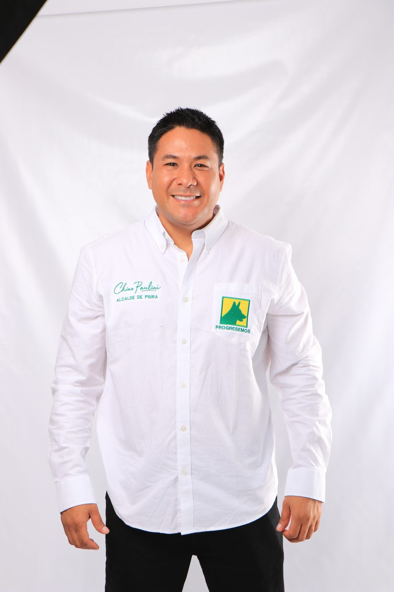
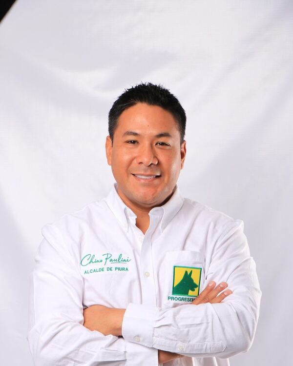

Ricardo "Chino" Paulini tiene el plan de gobierno concreto que Piura necesita: saneamiento básico, seguridad, desarrollo económico, medio ambiente y transparencia total. No retórica — resultados con fecha y número.

El plan de Chino Paulini está estructurado en cuatro ejes estratégicos interdependientes, basados en datos oficiales del INEI y el BCRP.
Impulsar una economía provincial dinámica, formal y resiliente que genere empleo digno.
Gestionar el territorio con sostenibilidad y mitigación de riesgos climáticos.
Transformar la Municipalidad en un gobierno moderno, descentralizado y honesto.
PROGRESEMOS es el único partido animalista del norte peruano. Chino Paulini lleva en su plan de gobierno compromisos concretos para el bienestar animal en la provincia de Piura.

Candidato a la Alcaldía Provincial de Piura por el Movimiento Regional Progresemos. Piurano de nacimiento y convicción, Chino Paulini postula con el Plan de Gobierno más completo y fundamentado de la contienda electoral.
Escríbenos y te contamos cómo sumarte al equipo de PROGRESEMOS en tu distrito.